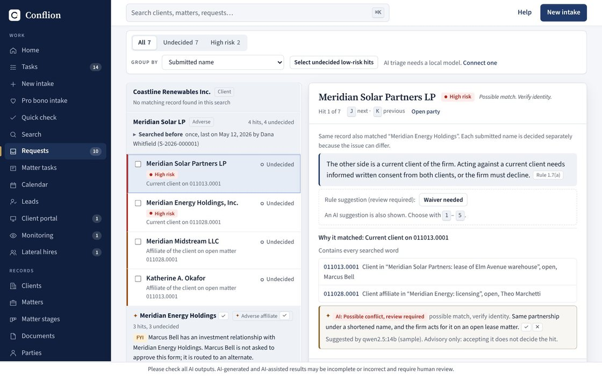

Welcome to the portfolio. 71 projects · 5 rooms

Software for real businesses, novels and screenplays, games and reference works, and the workflows behind them. Each piece below shows what was made and which AI tools, Claude, ChatGPT, Codex, Suno and models running on my own computer, did which part.
- 3,000,000
- Synthetic parties its search was benchmarked on
- 357 of 358
- Quotations checked word for word in a blind test on 26 federal cases
Floor plan
Five rooms. Each room’s floor area follows its number of projects. Select a room to go in.
Directory
Every project, by room. The letter and number are the exhibit number on its wall label.
1Legal
27 projects
- L01Conflionfull-function firm software
- L02Conflion Small Firmsmall-firm software
- L03VigilMarktrademark watch
- L04PraxisAI strategy studio
- L05LexAtlaslegal graph
- L06Skippylegal AI assistant
- L07Win your case ASAPlitigation AI
- L08Testimony Checkdeposition prep
- L09Citation Gatebrief checking
- L10Guideline Guardbilling rules
- L11Hour Catchtime capture
- L12Party Finderconflicts
- L13Matter Deskpractice workflows
- L14Firm Factsfirm data layer
- L15Copilot Kitagents for Microsoft Copilot
- L16Name-match bake-offsearch benchmark
- L17The Deal DeskM&A desk
- L18Synthesisdeal workbench
- L19Case Wins Debrieflitigation lessons
- L20Marketing Studiofirm marketing
- L21SNF Deal Desksenior care deals
- L22California Deadlinesdeadline calculator
- L23Jury Labargument stress-test
- L24Exposure Modelerwhat a case is worth
- L25Motion Mappermotion outcomes
- L26Crosswalkrule-change watch
- L27SeedShieldprivilege redaction
2Business
13 projects
- B01RSC Tooloffice app + job tracker
- B02rscrafters.comwebsite + blog
- B03Ad studiosix animation styles
- B04TikTok on autopilotscheduled posting
- B05Fieldworkdeal engine
- B06Money Desklocal AI workbench
- B07Northfield Realtybrokerage site + 10 AI tools
- B08Permit Postcardspermit leads on a map
- B09Sample sites15 sites for local businesses
- B10Front Officequotes, invoices and follow-ups
- B11Back-office automationsthe routine work, handled
- B12MLP Consultingthe site and the pitch
- B13Thrifty Vowswedding budget app
3Creative & games
10 projects
- C01Cat songs and music videosSuno + animation
- C02CatGPTlocal AI + 9 games
- C03Clay explainersBlender + local voice
- C04298,692 words of fiction, and the systems that write it299k words
- C05Kitty KartGodot kart racer
- C06Brinewakebrowser tactics game
- C07Glyphdeeptext-mode dungeon crawler
- C08Ozymandias in claypoem film
- C09Cat fairytalesthree pixel films
- C10SMUDGEPOTfrost-night orchard game
4Design & 3D
5 projects
5AI & research
16 projects
- R01BLACKBOXagent recorder
- R02AgentForgelocal AI agents
- R03AgentForge Rust Editioncross-platform agents
- R04Highlight BarAI actions on selected text
- R05Atlasprivate file search
- R06Tab Bankruptcytab digest for Chrome
- R07Argument X-rayreading tool
- R08Boardroom of Onedecision tool
- R09Small-model prooflocal AI experiment
- R10Usage Flamesession usage profiler
- R11Byzantiummosaic atlas
- R12ME/CFS and Long COVID evidence mapmedical research
- R13Clear Aftercarepatient tool
- R14WHITE SPACEventure research terminal
- R15Standing Orderssession to shell script
- R16Trauma guideline citation auditevidence check
How I work with AI
House rules
Rules I bring to every project
Write the system before the thing
A story bible before the novel, a 16-section prompt before the screenplay, a walkthrough of how the work is really done before the app. The system is what makes the result repeatable.
The model drafts, code decides
In business software the AI reads and suggests, while prices, totals and matching are computed in code, and a person approves every change.
Ship the whole arc
A product is not done at the demo. Tests, a walkthrough, a pilot pack, and notes for the next AI session all ship with it.
Which AI for what
Visitor guide: which AI for what
The right tool for each job
This portfolio is about using AI well in general, not one product. Here is which tool did which part of each project. Most projects use more than one.
| Project | Which AI did what |
|---|---|
| Conflion |
|
| RSC Tool |
|
| Win your case ASAP |
|
| Byzantium |
|
| Cat songs and music videos |
|
| Ring Studio |
|
| Strandfall |
|
Show all 48 projects
| Project | Which AI did what |
|---|---|
| Testimony Check |
|
| Citation Gate |
|
| Guideline Guard |
|
| Hour Catch |
|
| Party Finder |
|
| Matter Desk |
|
| Synthesis |
|
| Case Wins Debrief |
|
| Marketing Studio |
|
| SNF Deal Desk |
|
| Praxis |
|
| LexAtlas |
|
| Skippy |
|
| VigilMark |
|
| Fieldwork |
|
| rscrafters.com |
|
| Ad studio |
|
| TikTok on autopilot |
|
| Clay explainers |
|
| ME/CFS evidence map |
|
| Clear Aftercare |
|
| Trauma guideline citation audit |
|
| CatGPT |
|
| Thrifty Vows |
|
| Money Desk |
|
| Northfield Realty |
|
| Sample sites |
|
| Front Office |
|
| Back-office automations |
|
| MLP Consulting |
|
| AgentForge |
|
| BLACKBOX |
|
| Atlas |
|
| Tab Bankruptcy |
|
| ASCII and generative art |
|
| Argument X-ray |
|
| Specimen Room |
|
| Novels |
|
| Kitty Kart |
|
| Brinewake |
|
| Boardroom of One |
|
| Horror screenwriting |
|
| Research reports |
|
| Logo Studio |
|
Style archive
This site is also a running design experiment. Each version renders the same 71 case studies in a completely different style, from a museum floor plan to a 1991 law-firm word processor. See every version
You’re looking at: The Museum.